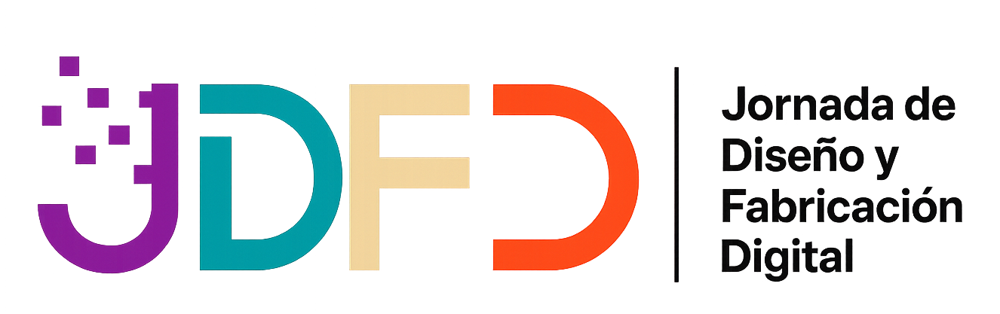
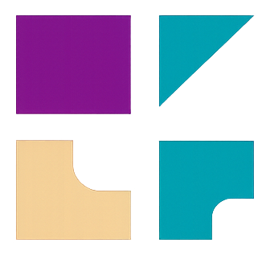
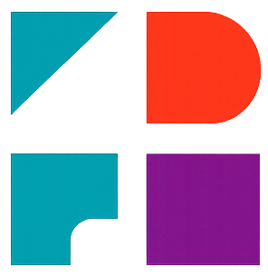
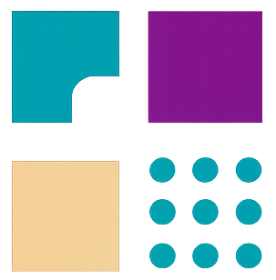

Diseñar haciendo,
fabricar transformando
Jueves 27 de Agosto de 2026 - UNLa - Buenos Aires, Argentina
1ERA JORNADA DE DISEÑO Y FABRICACIÓN DIGITAL
La 1ª Jornada de Diseño y Fabricación Digital en el LAD (JDFD LAD 2026) es un espacio de encuentro, reflexión e intercambio colectivo acerca de las transformaciones en la gestión del diseño y de la innovación en la actual era de digitalización creciente de los procesos productivos, con el objetivo de promover la innovación y el desarrollo de proyectos que integren diseño y tecnología.
Esta primera edición, organizada por el Laboratorio de Diseño (LAD) del Departamento de Humanidades y Artes de la Universidad Nacional de Lanús (UNLa), se llevará a cabo el día jueves 27 de agosto de 2026 en el Polo Tecnológico de la universidad (Predio Yrigoyen), en Lanús, Buenos Aires, Argentina.
Bajo el propósito de reunir a los actores de la innovación en fabricación digital aplicada al campo del diseño y de otras ciencias, la jornada invita a investigadores, docentes universitarios y de escuelas técnicas, profesionales de la industria y estudiantes de grado y posgrado a promover la divulgación de experiencias, investigación y desarrollo. En el encuentro se combinarán charlas virtuales matutinas, espacios de talleres y muestras, y conferencias presenciales vespertinas , con el objetivo de generar un entorno dinámico de networking, experimentación y soluciones significativas para el desarrollo tecnológico y de nuestras comunidades.
MODALIDADES DE PARTICIPACIÓN

COMUNICACIÓN BREVE
Hasta 1000 palabras y 20 imágenes. Se publicará en libro de Actas.
Ir al Formulario
Descargar condiciones

ARTÍCULO
Artículo completo con máximo 3500 palabras. Se publicará en libro de Actas.
Ir al Formulario
Descargar condiciones

EXPERIENCIA EN VIVO
Podrás compartir tu experiencia en tiempo real durante el evento. Duración 20 minutos.
Ir al Formulario
Descargar condiciones

MICROTALLER
Taller interactivo de corta duración. Duración 40 minutos.
Ir al Formulario
Descargar condiciones
EQUIPO DE TRABAJO

Esp. Estefanía Fondevila Sancet
Coordinación General del LAD
Esp. en Metodología y programadora web, Responsable de la coordinacion de Investigación DHyA, fundadora del HUB de Diseño Industrial de la UNLa, desarrolla herramientas de planificación, diagnóstico, desarrollo y seguimiento de proyectos y emprendimientos. Articula con empresas, instituciones y equipos interdisciplinarios.

Nombre Apellido
Producción y Contenidos
Especialista en diseño paramétrico, cultura maker y articulación entre universidad, territorio y tecnología.

Nombre Apellido
Comunicación
Trabaja en comunicación visual, identidad institucional y estrategias digitales para proyectos culturales y académicos.

Nombre Apellido
Vinculación Institucional
Investiga procesos de innovación social y desarrollo de proyectos interdisciplinarios vinculados al diseño y la fabricación digital.
Ubicación y Cómo Llegar
La 1° Jornada de Diseño y Fabricación Digital se realizará en el Polo Tecnológico de la Universidad Nacional de Lanús (UNLa), un espacio dedicado a la innovación, el diseño y la fabricación digital.
Dirección
Polo Tecnológico UNLa
Av. Hipólito Yrigoyen 5682
Remedios de Escalada, Lanús
Provincia de Buenos Aires
El predio se encuentra a pocos minutos de la estación de tren Remedios de Escalada (Línea Roca) y es accesible mediante varias líneas de colectivo que circulan por Av. Hipólito Yrigoyen.En este predio encontrás los edificios del Polo Tecnológico, la Escuela de Oficios Felipe Vallese, el Museo Universitario de Diseño MUD, el Museo Universitario de Ciencia MUC, RadioUNLa y el Polideportivo Mary Terán de Weiss.
Cómo Llegar
- En tren: Se puede llegar en subte con la línea C a la estación Constitución. Allí tomar el tren eléctrico, ramales Glew, Ezeiza, Alejandro Korn o Claypole ("vía Temperley"). Tiene tres opciones: • Bajar en la estación Banfield: Al salir de la estación, dirigirse a la Av. Alsina, doblar a la izquierda y caminar 7 cuadras hasta llegar al ingreso de la UNLa por calle Malabia. • Bajar en la estación Lanús: Al salir de la estación tomar un colectivo hasta la Universidad. Línea Roca – Estación Lanús. Desde allí se puede acceder caminando o mediante líneas de colectivo cercanas.
- En colectivo: Varias líneas circulan por Av. Hipólito Yrigoyen y alrededores del predio universitario. Los colectivos que van desde la Ciudad de Buenos Aires hasta la puerta de la UNLa son: 74 (desde Correo Central/San Telmo/Barracas) 79 (desde Constitución) 160 (desde Aeroparque/Palermo/Almagro): sólo cartel verde que diga "Claypole" o "Don Orione".
- En automóvil: El acceso principal se encuentra sobre Av. Hipólito Yrigoyen. Por Puente Pueyrredón (AU 9 de Julio Sur): Al final del puente, tomar por la bajada de la derecha, cartel "Lanús por Avenida Pavón", que desemboca en Av. Hipólito Yrigoyen. • Por Puente Uriburu (Pompeya - Valentín Alsina): Desde Palermo por Bulnes o Medrano –luego Av. Boedo y Av. Castro Barros, respectivamente- hasta Av. Sáenz. Cruzar el puente y seguir derecho por la Av. Remedios de Escalada, que desemboca en Av. Hipólito Yrigoyen, donde se deberá doblar a la derecha. Se recomienda llegar con anticipación. El predio cuenta con estacionamiento limitado, por lo que se sugiere compartir vehículos o utilizar transporte público.
RECIBI LAS NOVEDADES DE LAS JORNADAS
Recibí recursos, novedades y muchas cosas más sobre nuestras Jornadas de Diseño y el ecosistema de la Fabricación Digital.